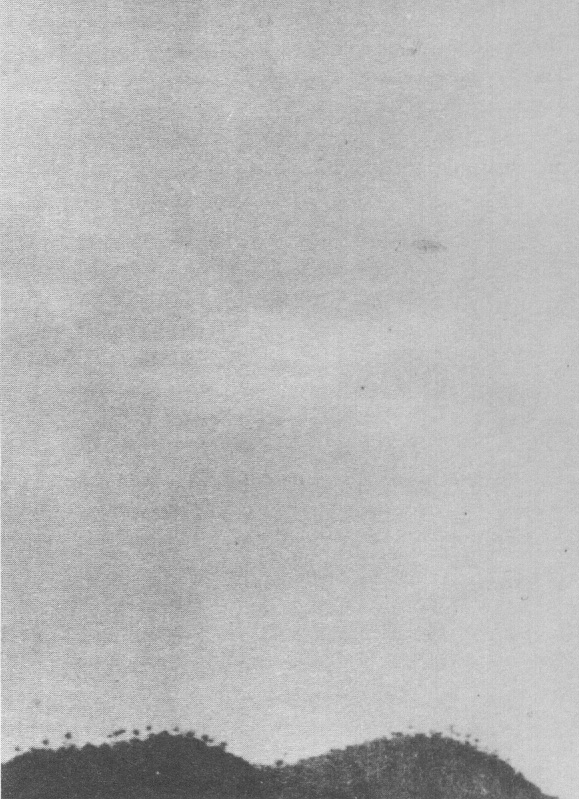
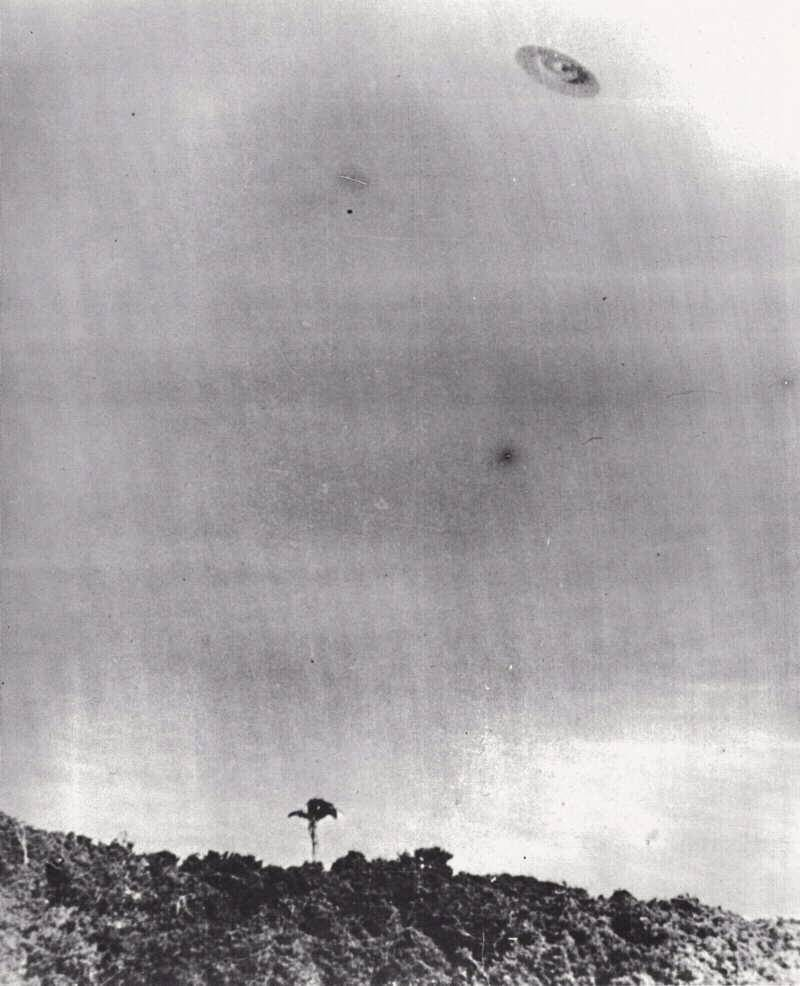
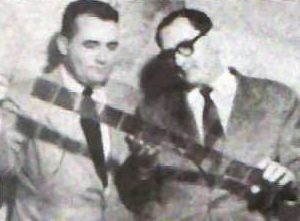

En , de nombreuses rumeurs courent sur Hitler en Amérique du Sud, et diverses personnes disent le
voir ici où là. Parmi ces témoignages, certains parlent de la Barra da Tijuca, un groupe d'îles touristiques situé
près de la baie de Rio de Janeiro (Brésil). Le magazine O Cruzeiro décide d'envoyer 2 de ses
journalistes, João Martins et Eduardo Keffel (photographe).
Le matin du , Martins et Keffel montent à bord du Piaba, qui traverse le petit
lagon séparant la région de Rio de la Barra da Tijuca. Ils dépassent le canal de Barra, en direction de l'île
des Namorados. , ils arrivent au bar Do Compadre, où ils y parlent avec le
propriétaire, Antônio Teixeira, tentant de dénicher des indices sur la présence d'Hitler,
jusqu'à . Ils mangent, puis prennent quelques photos d'endroits pittoresques, jusqu'à
, où ils décident de se rendre sur la plage. De nombreux avions de ligne survolent la région, allant
ou venant de la rivière.
L'observation
Soudain, leur attention est attirée par un objet étrange venant de la mer. Cela ressemblait à un avion
diront les journalistes, mais il volait de biais. L'objet s'approche de la côte et devient plus visible. Ce
n'est pas un avion, mais un disque parfait. Sa vitesse est considérable.
Martins dit à Keffel de le photographier. Ce dernier se saisit de son Rolleiflex :
Comme avec des lunettes, j'ai dû mettre les lentilles dans le viseur de l'appareil pour pouvoir prendre la
première photo. J'ai photographié cet objet plus de 4 fois. Ensuite j'étais à la fin de la pellicule.
L'objet n'était qu'un point ; c'était difficile de suivre ses évolutions. Il a rapidement atteint la verticale de
la plage et m'a donné l'impression de freiner. A ce moment — et d'après les calculs qui nous fîmes par la suite —
il devait être à 1500 m de nous et toujours au-dessus de la mer.
Dans la 2ème photo, volant au-dessus de la plage et des arbres de Tijuca, il commence à se déplacer "de côté",
nous montrant une de ses "faces". Dans les photos 3 et 4 — prises lors du survol du Rocher de Gávea et de
l'extrême pointe de la Ponta do Marisco — le disque montre ses parties inférieures et supérieures, respectivement.
Dans la 5ème et dernière photo, l'objet disparaît au loin vers l'océan. Il a fait un virage presque parfait autour
de nous...
Nous avons calculé que dans la 2ème photo il devait être à environ 2000 m de l'endroit où nous nous trouvions.
Dans la 3ème, à 1200 m dans dans les 2 dernières, à 1100 et 3000 m, plus ou moins.
Sa forme était parfaitement nette. Ronde comme un disque...
Alors qu'il volait au-dessus du Rocher de Gávea, l'objet commença à descendre, se balaçant comme une feuille
morte. Il était très curieux. Nous n'avions jamais vu un système de voyage aérien si étrange.
Lorsqu'il arriva sur la mer, le disque fit un bond hallucinant à toute vitresse. Nous avons vu l'objet s'incliner
à 45°, comme un avion qui volerait sur une de ses ailes, et disparaître comme une fusée, de l'autre côté des îles
Alfavaca et Pontuda. Tout cela a peut-être duré 1 minute. Le plus curieux est que ni João ni moi n'avons entendu
de bruit. Comme cela a-t-il été possible ? Nous n'avons pas non plus vu de conduit d'échappement de fumée ni de
gaz ni de flammes...
Nous ne pouvons pas estimer avec précision l'altitude ni la taille réelle de l'objet. Personnellement il me
semble qu'il volait à 1000 m de hauteur et que sa taille pouvait être le double de celle d'un DC-3. C'est-à-dire,
entre 70 et 80 m de diamètre

Photo 2
Martins, moins occupé à prendre des photos, raconte son observation :
Même si c'était avec des lunettes de soleil, j'ai essaé de mémoriser un maximum de détails. Eduardo continuait à
prendre des photos et, chose étrange, exactement au moment où il n'y avait plus de pellicule dans l'appareil, il
n'y avait plus le temps pour prendre d'autres photos. L'ovni a rapidement disparu.
Sur cette pellicule, comme nous avons pu le montrer dans les laboratoires du magazine, il y a — successivement —
une photo de 2 personnes de l'hôtel Riviera de Copacabana, où un collègue réside, un paysage — prise la veille —
une photo de mon collègue le matin prise à la rédaction, un couple d'amoureux que nous avions surpris à notre
arrivée sur l'île et, enfin, juste avant la série de 5 photographie de l'ovni, une du propriétaire du bar où nous
sommes allés déjeûner une délicieuse assiette de crevettes. Cette dernière photo fut prise 1 h avant l'apparition
de l'objet.
Lorsque le dique est apparu, nous ne savions pas comment réagir. Ed cria : "Mon dieu... Qu'est-ce que diable est
ceci ?" Ce à quoi j'ai répondu : "Photographie ! Photographie !" Mais avait-il eu le temps de prendre les photos ?
Lorsque je lui ai demandé, il m'a répondu affirmativement. Alors avec toutes les précautions du monde - on imagine
! - on sortit la pellicule utilisée et la remplaça par une autre, "au cas où" cela revienne... Après un moment,
indiquant que l'objet n'allait pas réapparaître, nous nous sommes affairés à trouver des témoins. Derrière une
petite dune se trouvait un pêcheur — son Claudionor — mais qui, occupé à son travail, dit qu'il n'avait rien vu.
Nous sommes alors retournés au restaurant, mais le propriétaire reste tout l'après-midi à l'intérieur de
l'établissement et ne veux rien entendre des histoires d'ovnis.
Deux couples restés sur le côté au moment de l'apparition du disque n'ont pas voulu répondre...
Nous avons alors décidé de retourner à la rédaction, oubliant la présomption sur Hitler. Ce que nous avions en
poche était bien plus intéressant.
Nous avons téléphoné au directeur et, après avoir raconté ce qui s'était passé, avons demandé à ce qu'ils
préparent une chambre noire pour développer la pellicule.
Nous avons traversé la ville à toute vitesse et envoyé le film au laboratoire. Cela devenait une réception. De
nombreuses personnes — dont parmi elles le directeur — attendaient nerveusement le résultat du développement. Leur
attente ne fut pas vaine. Finalement les 5 photos apparurent dans toute leur splendeur...
Développement
La Photo 3 qui fit la couverture de O Cruzero, avec la légende : Fantastique mais
réel. La soucoupe volante volant au-dessus de la Pedra da Gávea, montrant sa partie inférieure.
Effectivement les dirigeants du magazine, Leão Gondim de Oliveira et Accioly Netto, attendent avec l'équipe de
développement photo : Jose Amádio, Ávila Milton et Ari Vasconcelos.
L'Ovni apparut devant nos yeux écarquillés en 5 positions différentes. Et en toute clarté.
Les directeurs du magazine donnent l'ordre d'arrêter l'impression afin de pouvoir y ajouter le scoop, sur 8
pages.
Le (bien que le magazine porte la date d'impression initialement prévue du
), O Cruzeiro titre donc Disco voador na Barra da Tijuca, un
encart extra. Le texte indique en grands caractères gras : O Cruzeiro présente, dans un scoop journalistique
spectaculaire, la documentation la plus sensationnelle jamais obtenue sur le mystère des soucoupes volantes.
La revue indique : l'objet étrange est venu de la mer à une vitesse énorme et a été observé durant
. Il était d'une couleur gris-bleuâtre, totalement silencieux, et n'a laissé aucune trace de fumée
ou de flammes. Lisez le rapport complet de la fascinante observation au-dessus de la Barre de Tijuca.
Les radios et télévisions annoncent la nouvelle à tout le pays. Le magazine est rapidement épuisé et datera un
record de publication dans cette région. La nouvelle se propage dans le monde entier, et bien sûr auprès des
groupements ufologiques des autres pays, qui vont le considérer avec le plus grand sérieux.
Dans les jours qui suivent, les locaux de la rédaction voient défiler enquêteurs, politiciens, et militaires dont
le Ministre de l'Armée, le général Ciro do E. S. Cardoso, ainsi que le général Caiado de Castro, chef de la Maison
Militaire de la Présidence, visitent personnellement la rédaction, parlent avec les journalistes et examinent les
photos. Le chef d'état-major de l'Armée de l'Air est également alerté et envoie les majors Arthur Peralta et
Fernando Hall, le capitaine Múcio Scevola et l'expert en photographie Raul Alfredo Da Silva.
Le colonel Hughes, attaché militaire à l'ambassade des USA au Brésil, fait
pression pour obtenir les clichés. Il rapportera :
J'ai été très impressionné. Les négatifs sont extraordinaires et je ne peux douter de leur authenticité. Pour la
1ʳᵉ fois au monde, nous avons photographié un disque volant dans des conditions qui ne permettent aucun doute.
Enquête officielle et secrète
Radar n° 172 du 25 mai, titrant à propos de l'affaire : Soucoupes volantes : premières
photos
Cependant, la FAB veut savoir en avoir le cœur net. Le , elle réunit une équipe de spécialistes dans le but de trouver une explication
conventionnelle pour ces photos. Des maquettes en bois sont fabriquées à l'échelle et, sous la direction du
colonel Joao Adil de Oliveira, plusieurs officiers accompagnés de photographes se rendent à Barra da Tijuca pour les
photographier en l'air, même endroit, heure, direction et conditions où l'ovni a été photographié. La FAB prend des centaines de photos. Des relevés topographiques sont effectués et
on épuise toutes les possibilités techniques de l'époque pour l'analyse des 5 négatifs.
Le directeur du magazine lui-même, Leão Gondim de Oliveira, engage Carlos de Melo éboli, un expert de la police
technique, pour fournir un rapport technique. On commence à remarquer les ombre divergentes, mais n'en tire pas de
conclusion.

La 4ᵉ photo de Barra da Tijuca photo. Les arbres semblent éclairé de la droite, alors que l'ovni est
éclairé de la gauche [APRO].
L'enquête militaire, elle, reste privée, jusqu'au où, au cours d'une conférence donnée à
l'École Militaire Supérieure, une partie du secret est dévoilée. On sait alors qu'une telle enquête officielle
existe et que son verdict est positif : pour la FAB, les photos sont authentiques.
Contestations
Pourtant à cette même époque, Almiro Baraúna analyse en détail les photographies et
arrive à la conclusion qu'il s'agit de faux et qu'elles peuvent être réalisées via une double exposition. Il décide
alors de contester publiquement l'authenticité des photographies de Keffel Encyclopedia of UFOs de Ronald D. Story, Doubleday 1980, p. 41.
et, suite aux écrits de Vinícius Lima, écrit un article railleur à ce sujet dans un magazine brésilien Mundo
Ilustrado, et fabrique lui-même un faux montrant comment de tels canulars peuvent être réalisés.
En , le n° 76 de Ciência Popular, déclare que les photos sont fausses. 2 ans plus
tard, le même journal publie à nouveau la même position. Cette fois-ci le texte suggère une exploitation commerciale
de la part de O Cruzeiro :
Un des magazines les plus splendides de son genre, sans oublier de mentionner son équipe d'excellents
journalistes, a en fait exploité duq> plusieurs semaines ces images obtenues à Barra da Tijuca par 2 de ses
reporters. Et de conclure : Les images sont complètement fausses, comme nous l'avons indiqué dans notre édition
de Janvier 1955, et nous le répétons aujourd'huiCiência Popular n° 109, 1957-10.
Révélation publique télévisée

Keffel et Martins
Le , que la société va prendre connaissance de l'enquête militaire. A l'occasion d'une
émission télévisée, Fernando Cleto Nunes Pereira, employé de la Banque du Brésil et enquêteur vétéran, révèle au
grand public les conclusions de la FAB, ainsi que les détails de l'enquête.
Pereira enquête sur le sujet ovni depuis et a accès aux archives privées de la FAB. Dans ce programme de la chaîne 9 de la télévision brésilienne — intitulée
O enigma do Espaço (L'Enigme de l'Espace) — l'enquêteur racontera comment il reçut un jour un câble du
colonel Adil João de Oliveira, qui finit par être nommé à la direction de la 1ère commission brésilienne officielle
d'enquête sur les ovnis (sur ordre du général Eduardo Gomes, futur ministre de l'Armée). Le colonel Oliveira invita
l'enquêteur à se présenter lui-même devant l'état-major de la FAB, pour déposer
sur les événements de 1948. Lorsqu'il arriva sur place, il trouva d'autres particuliers invités, ainsi que des
officiers de la base aérienne de Gravataí (Porto Alegre - RS) qui, le , purent observer un
vol de 5 ovnis à la base, durant des heures. A un moment donné, il trouva également dans la salle de conférence les
journalistes du Cruzeiro, également convoqués par le colonel de Oliveira.
Le , João Martins et Ed Keffel se sont rendus en un lieu nommé Barra da Tijuca pour
effectuer une tâche de routine pour leur magazine. A , Martins repère soudain un
objet approchant en l'air à grande vitesse. Il pense d'abord qu'il est face à un avion. Cela ressemble à un avion.
Il y a toujours quelque chose d'étrange, réalise Martins. Cet "avion" vole de côté. Il crie : "Que diable cela
peut-il être ?" Keffel avait son Rolleiflex en main et Martins crie : "Prends-le, Keffel !" Ed Keffel attrapa son
appareil chargé et prit 5 clichés en environ , obtenant ainsi la séquence photographique la plus
sensationnelle d'un disque volantCleto.
Photo 5 : La lumière éclairant la soucoupe vient-elle de l'Océan Atlantique ?
Ce qui suit est une déclaration personnelle de Martins, également approuvée et cosignée par Keffel :
Je confirme par la présente qu'en , j'ai vu un "objet aérien non-identifié" à
Barra da Tijuca, comme cela fut publié, avec tous les détails, dans la revue 0 Cruzeiro à l'époque. Avec moi se
trouvait le reporter-photographe Ed Keffel, un professionnel exemplaire, à qui tout réussit et parfaitement
respecté pour son honnêteté et son sérieux, qui a obtenu une série de photos de l'objet désigné ci-avant. Ces
photos furent également publiées par la revue citée précédemment, pour laquelle nous travaillions tous deux à
l'époque.
En plus d'être journaliste, je suis aussi ingénieur, et j'ai également une grande expérience et connaissance des
phénomènes météorologiques, astronomiques, et optiques. J'ai une expérience de tous les types d'appareils aériens
et peut déclarer que l'objet en question ne peut cadrer avec un quelconque phénomène naturel ou appareil aérien de
ma connaissance.
Ni moi ni Ed Keffel n'ont essayé de tirer un profit financier du fait. Nous étions à cette époque en contrat
exclusif avec cette revue [O Cruzeiro], et c'est là que nous avons apportés notre rapport et les photos,
sans recevoir quelque bonus extra pour aucun des deux. Nous ne reçûmes non plus - ni ne souhaitèrent recevoir -
aucun paiement de qui que ce soit, que ce soit pour le récit ou pour les photos ou pour les apparitions que nous
fûmes pratiquement obligés de faire en différentes occasions à la télévision.. J'ai relaté le fait dans des
discussions libres avec les autorités militaires et dans des auditoriums d'universités.
Je ne sais pas ce qu'était cet objet, et en raison de cela, je l'ai classé dans la catégorie d'"objet volant non
identifié", couramment appelé "soucoupe volante". L'incident, outre les ennuis qu'il a pu attirer, a eut pour seul
avantage de contribuer à attirer mon attention sur le sujet, et j'ai par conséquent fait des recherches sur le
sujet avec le plus grand détachement, sur les observations ici au Brésil ainsi qu'aux alentours...
D'après la position du Soleil et les ombres sur le feuillage, comme on peut le voir sur une des photos de Barra
da Tijuca, il est facile de les confirmer. Il suffit de se rendre là-bas ; et il est facile de se placer au point,
à la même heure et époque de l'année correspondant au fait. Cela, en fait, a déjà été effectué en 1952, par des
techniciens de la Force Aérienne Brésilienne, comme cela fut plus tard divulgué
par le chercheur Cleto Nunes via la TV et la Presse.
Les critiques, la contestation des faits, ou les discussions par quiconque ne connait pas le sujet ou le connaît
de distance ou via la lecture de publication de troisième main, qui sont généralement incorrectes, ne peuvent
qu'être dues à l'intolérance ou un but malhonnête. Pour ma part, je les ignore, étant un professionnel ne basant
pas sa carrière sur ce rapport, ni ayant de temps à perdre en débats stériles. J'ai simplement rapporté ce que
j'avais vu et tout ce que j'avais à dire a été dit.
Analyses photo
Certains avancent que dans la 4ᵉ photo les ombres sur le feuillage indiquent une lumière venant de la droite, alors
que la lumière sur l'objet semble venir de gauche.
Ceci est décrit dans un livre de Donald Howerd MenzelMenzel, D. H. & Boyd 1963,
et confirmé par William K. Hartmann qui analysera les photos pour le rapport Condon : Ce cas est présenté comme un exemple de photographies
décrites comme une preuve incontournable des soucoupes volantes, bien qu'il contiennent une incohérence interne
simple et évidente Hartmann.
Jim Lorenzen, directeur de l'APRO, conteste
cette interprétation : Pour briller de la droite, le Soleil devrait briller du quadrant Sud-Ouest du ciel — une
chose qu'il ne fait jamais dans cette partie du Brésil. De plus, la végétation sur le côté de la colline est
complexe ; et généralement aucun motif clair d'objet-ombre n'existe.
En , dans une lettre à Carlos Alberto Reis, un ufologue de São Paulo Para onde caminha a ufologia brasileira ?], William
H. Spaulding, directeur du GSW, déclare avoir analysé les images de O Cruzeiro et que les ombres
sont complètement divergentes - en particulier la 4ème photo, où l'on peut voir un palmier : l'ensemble est illuminé
de droite à gauche, tandis que la soucoupe est illuminée de gauche à droite. Le GSW fait également part de distortion atmosphérique : le décor est bien loin,
tandis que l'objet photographié est très près. Conclusion pour Spaulding : une maquette d'environ 40 cm de diamètre
a été utilisée pour réaliser les images. Utilisant ces nouvelles analyses, Reis publie en un article dans le n° 138-C du magazine Planeta, relançant - à ses dépends -
la controverse brésilienne entre défenseurs et détracteurs.